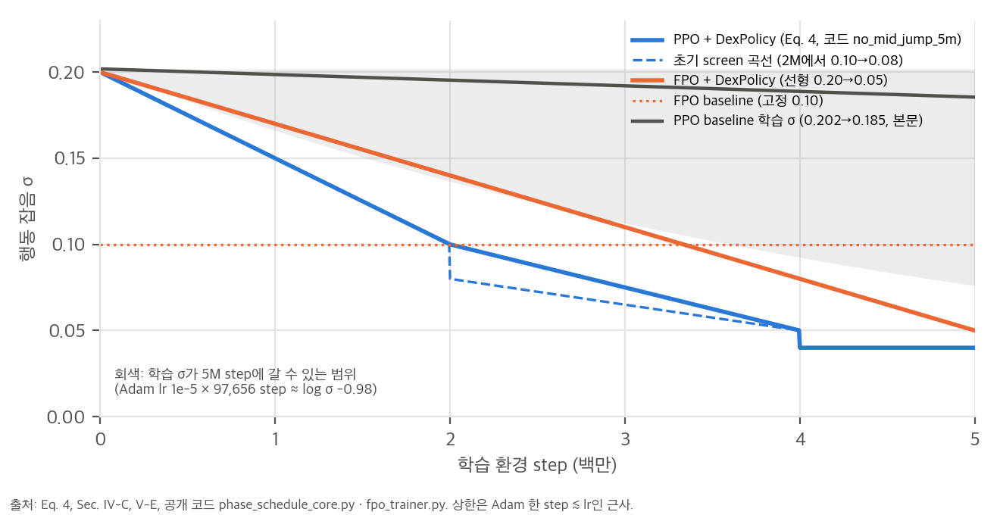
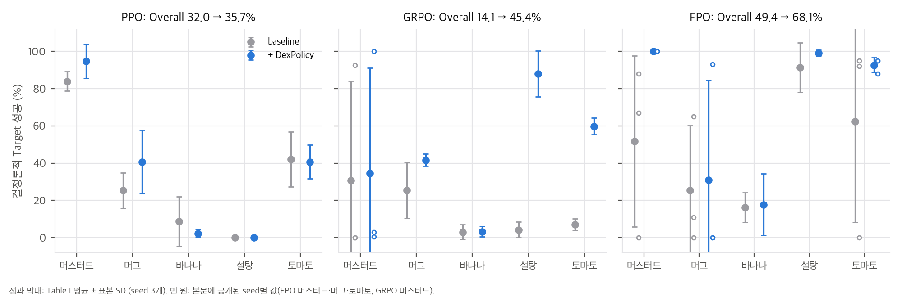
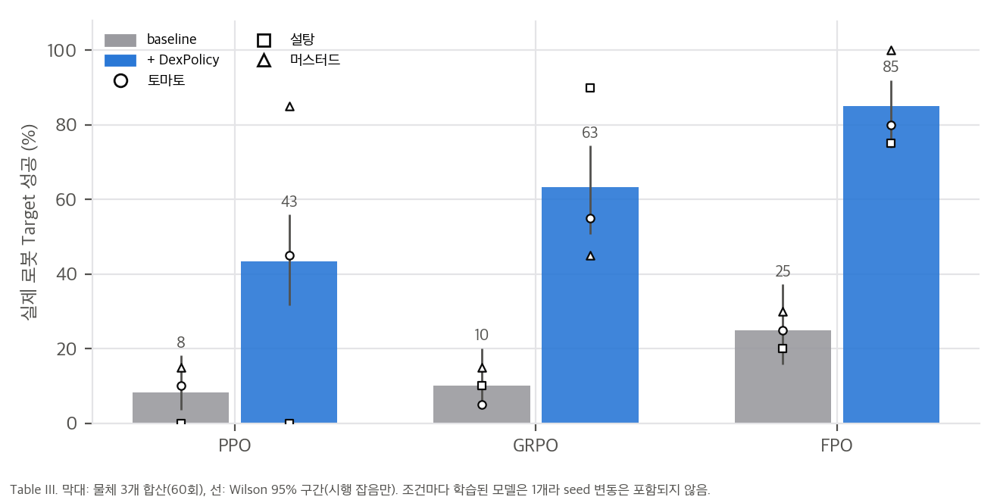
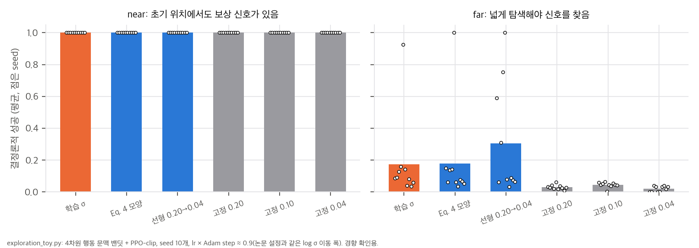

grpo_rtg 모듈을 가리킨다. GRPO 연속 학습 스케줄도 코드에 없다. ViViDex 공개 환경의 목표 성공 기준은 3 cm가 아니라 5 cm다.
우리 분석: 논문과 코드의 σ 스케줄, 그리고 학습 σ가 5M step 안에 갈 수 있는 범위(회색).
98bf668, 2026-10-04, MIT) · 체크포인트 https://huggingface.co/AIGeeksGroup/DexPolicy (575645a) · 프로젝트 https://aigeeksgroup.github.io/DexPolicyzerchen/vividex_mujoco의 설정·보상 파일한 줄 요약: 사람 영상에서 얻은 손-물체 궤적을 RL로 다듬는 ViViDex의 state-policy 단계에서, PPO가 학습하던 행동 잡음 σ를 학습 step의 함수로 미리 정해 줄이는 것만으로 최종 결정론적 성공률이 오른다고 주장합니다. 손실, 구조, 보상, 최적화 설정은 쌍마다 그대로 둡니다.
논문이 내세우는 기여는 세 가지입니다(Sec. I).
헤드라인 수치(초록, Table I·III):
| 시뮬레이션 (물체 5개 × seed 3개) | 실제 로봇 (물체 3개 × 20회, 조건당 모델 1개) | |
|---|---|---|
| PPO | 32.0 → 35.7% | 8.3 → 43.3% |
| GRPO | 14.1 → 45.4% | 10.0 → 63.3% |
| FPO | 49.4 → 68.1% | 25.0 → 85.0% |
ViViDex state-policy 단계: 영상에서 얻은 손-물체 궤적(DexYCB) → RL로 물체 재배치(relocation) 정책 학습
(원래 ViViDex는 이후 visual policy로 증류하지만, 이 논문은 state policy까지만 다룸)
행동 정책 q_{θ,k}(a_t | o_t) = N( μ_θ(o_t), σ_k² I ) (Eq. 1)
μ_θ : MLP(PPO, GRPO) 또는 flow로 만든 결정론적 평균(FPO)
σ_k = σ(s_k) : 누적 환경 step s_k의 함수, 모든 행동 차원이 공유하는 스칼라
rollout 수집과 모든 update epoch 동안 같은 σ_k → ratio의 분자·분모가 같은 σ를 씀 (Eq. 2)
PPO 목적함수: clipped surrogate (Eq. 3)
평가는 **결정론적 실행(σ_eval = 0)**을 기본으로 합니다. 학습 중 잡음 크기가 다른 두 조건을, 평가 때 잡음을 빼고 같은 규칙으로 비교하려는 설계입니다(Sec. I, V-A).
기준선 PPO는 ViViDex 설정 그대로 log σ를 학습합니다(초기 log σ = −1.60, 즉 σ ≈ 0.202). DexPolicy는 log σ를 얼리고 다음 곡선으로 정합니다.
σ(s) = 0.20 − 0.10·s/2M 0 ≤ s < 2M
0.10 − 0.05·(s − 2M)/2M 2M ≤ s < 4M
0.04 s ≥ 4M
학습률 1e-5, clip 0.20, 5 epoch, 기울기 norm 상한 0.50은 그대로입니다. 곡선은 2M에서 연속이고 4M에서 0.05 → 0.04로 떨어집니다. 동기로 든 관찰은, 머스터드 기준선 세 실행에서 학습된 σ가 5M step 뒤에도 0.185–0.186에 머문다는 것입니다(Sec. I).
value baseline 없이, 완료된 궤적의 할인 reward-to-go를 같은 에피소드 나이끼리 표준화한 것을 advantage로 씁니다.
G_{i,t} = Σ_{u=t}^{T_i−1} γ^{u−t} r_{i,u}, γ = 0.95
I_t = { j : T_j > t } (나이 t에 도달한 완료 궤적)
Â_{i,t} = (G_{i,t} − mean_{j∈I_t} G_{j,t}) / (std_{j∈I_t} G_{j,t} + 1e-8) (Eq. 5, |I_t| ≥ 2)
잘린 조각과 완료 궤적이 둘 미만인 나이는 advantage 0입니다. value loss, bootstrap, reference KL은 없습니다. 두 조건은 같은 물체·seed의 PPO 체크포인트(약 5M step)에서 출발합니다. 기준선은 물려받은 σ를 계속 학습하고, DexPolicy는 σ를 얼린 채 다시 키운 뒤 줄입니다(아래 3.3).
MLP 평균 대신 조건부 flow를 씁니다. 0에서 시작하는 8단계 적분기가 정규화된 상태를 결정론적 행동 평균으로 바꿉니다. 그 위에 Gaussian likelihood와 PPO clip update를 그대로 씁니다. 논문도 밝히듯 McAllister et al.의 FPO[17]나 FPO++[18](flow matching 손실로 ratio를 만드는 방법)과는 다른 알고리즘입니다. 기준선은 σ = 0.10 고정이고, DexPolicy는 5M step에 걸쳐 0.20 → 0.05로 선형 감쇠합니다. 따라서 FPO 비교는 "PPO 곡선(Eq. 4)"이 아니라 선형 감쇠 대 고정 잡음 비교입니다.
| 방법 | 머스터드 | 머그 | 바나나 | 설탕 | 토마토 | Overall |
|---|---|---|---|---|---|---|
| PPO | 84.0 ± 5.3 | 25.3 ± 9.5 | 8.7 ± 13.3 | 0.0 ± 0.0 | 42.0 ± 14.7 | 32.0 ± 5.3 |
| PPO + DexPolicy | 94.7 ± 9.2 | 40.7 ± 17.1 | 2.3 ± 2.1 | 0.0 ± 0.0 | 40.7 ± 9.1 | 35.7 ± 3.9 |
| GRPO | 30.8 ± 53.4 | 25.3 ± 15.0 | 3.0 ± 3.9 | 4.2 ± 4.3 | 7.0 ± 3.1 | 14.1 ± 8.5 |
| GRPO + DexPolicy | 34.5 ± 56.7 | 41.7 ± 3.3 | 3.2 ± 2.8 | 88.0 ± 12.3 | 59.8 ± 4.5 | 45.4 ± 14.4 |
| FPO | 51.7 ± 46.0 | 25.3 ± 34.8 | 16.3 ± 8.0 | 91.3 ± 13.3 | 62.3 ± 54.0 | 49.4 ± 21.5 |
| FPO + DexPolicy | 100.0 ± 0.0 | 31.0 ± 53.7 | 17.7 ± 16.6 | 99.0 ± 1.7 | 92.7 ± 4.0 | 68.1 ± 11.4 |

우리 분석: Table I 물체별 평균 ± SD와 본문에 공개된 seed별 값.
해석 (재계산은 04_code_verification.md §3과 analysis/table_check.py):
| 방법 | 토마토 T / L | 설탕 T / L | 머스터드 T / L |
|---|---|---|---|
| PPO → + DexPolicy | 10 / 35 → 45 / 70 | 0 / 5 → 0 / 10 | 15 / 75 → 85 / 95 |
| GRPO → + DexPolicy | 5 / 35 → 55 / 90 | 10 / 75 → 90 / 100 | 15 / 30 → 45 / 95 |
| FPO → + DexPolicy | 25 / 30 → 80 / 95 | 20 / 45 → 75 / 85 | 30 / 60 → 100 / 100 |
(T = Target %, L = Lift %, 조건당 20회)
04 C4), 시행 수준으로는 차이가 큽니다. 합산 Fisher p는 PPO 1.7×10⁻⁵, GRPO 1.1×10⁻⁹, FPO 3.1×10⁻¹¹입니다. 다만 조건마다 학습된 모델은 하나이므로 이 검정은 "그 모델 하나를 20번 돌린 잡음"만 다룹니다. 시뮬레이션 seed 사이의 분산(SD 수십 %p)을 생각하면, 모델 하나씩의 비교는 seed 운에 크게 열려 있습니다(04 C8).
우리 분석: Table III Target 성공(물체 3개 합산 60회)과 Wilson 95% 구간. 조건당 모델 1개.
04 D1). algos/grpo.py는 완료 궤적마다 할인 없는 총 보상을 rollout 전체에서 표준화해 그 궤적의 모든 step에 같은 값을 줍니다. 나이별 그룹도, γ = 0.95 할인도 없습니다. Hugging Face 메타데이터의 GRPO 모델은 credit_module: grpo_rtg(reward-to-go)로 적혀 있어서, 실험에 쓴 모듈이 공개되지 않은 것으로 보입니다. toy에서 두 advantage의 상관은 0.73, 부호 불일치는 7.6%였습니다(03 §3).total_timesteps: 100000000)이고, 이 논문의 비교는 5M step입니다. 이 예산에서 Adam(lr 1e-5)이 log σ를 움직일 수 있는 폭은 약 0.98입니다(03 §2). 0.20에서 0.04로 가려면 1.62가 필요해서, 학습된 σ는 원리상 DexPolicy의 최종 잡음에 도달할 수 없습니다. 따라서 PPO 비교는 사실상 "스케줄 대 거의 고정된 σ ≈ 0.19"이고, 저자가 한계로 든 "고정 저잡음 기준선 부재"가 정확히 이 지점입니다.04 D6). ViViDex 공개 코드의 목표 성공은 최종 물체 위치 오차 ≤ 0.01 × 5 = 5 cm입니다(rewards.py: success_goal). 논문 정의는 3 cm이고, Lift(5 cm 높이) 판정도 ViViDex에는 없습니다. DexPolicy가 환경·평가 코드를 수정했지만 공개하지 않아 확인할 수 없습니다.04 D2·D3). GRPO 연속 학습 스케줄(0.20 → 0.10 → 0.03, 토마토 0.10 → 0.02)과 최종 정책 선형 대조(0.20 → 0.04)는 preset에 없습니다. 반대로 preset에는 A2C, TRPO 훅, "std_centered", 진행도 트리거, GRPO 재확대·해제 같은, 논문에 보고되지 않은 변형이 많습니다.04 §1). 저자도 published FPO와 다르다고 밝힙니다.스크립트는 analysis/table_check.py(표·본문 재계산), analysis/exploration_toy.py(잡음 스케줄 toy), analysis/grpo_credit_toy.py(GRPO advantage 대조)입니다. 결과는 같은 이름의 *_results.json에 있습니다. 모두 numpy만 쓰고 CPU에서 각 20초 안에 끝납니다.
보상이 목표 근처에서만 큰 경우를 가우시안 bump r(a) = exp(−‖a − a*‖² / 2w²)로 단순화합니다. 행동이 N(μ, σ²I_d)를 따르고 평균이 목표에서 Δ = ‖μ − a*‖만큼 떨어져 있으면, 기대 보상은 닫힌 꼴입니다.
E[r] = ( w² / (w² + σ²) )^{d/2} · exp( −Δ² / (2(w² + σ²)) )
v = w² + σ²로 두고 log E[r] = −(d/2) log v − Δ²/(2v) + 상수를 v로 미분해 0으로 놓으면 다음을 얻습니다.
σ*² = Δ² / d − w² (음수면 σ* = 0)
해석:
Gaussian 정책의 score는 ∇_μ log π = (a − μ)/σ²이므로 크기가 대략 √d/σ입니다. σ가 작으면 평균에 대한 기울기 신호가 커지고, 목표 근처에서 정밀하게 맞출 수 있습니다. 대신 목표에서 멀 때는 보상을 받는 표본 자체가 없어서 신호가 사라집니다. §1.1과 같은 결론입니다.
PPO 기준선은 log σ를 다른 매개변수와 같은 Adam(lr 1e-5)으로 학습합니다. Adam의 한 step 변화량은 대략 lr 이하이고, 기울기 부호가 일정할 때 lr에 가깝습니다. 5M step 동안의 Adam step 수는 rollout 크기와 관계없이 다음과 같습니다.
(5,000,000 / 256 minibatch) × 5 epoch = 97,656 step
→ log σ 최대 이동 ≈ 97,656 × 1e-5 ≈ 0.98
| 양 | log σ 변화 |
|---|---|
| 5M step 동안 가능한 최대 이동(근사) | ±0.98 |
| 실제 기준선 변화(0.202 → 0.185, Sec. I) | −0.085 (최대의 9%) |
| DexPolicy 최종값(0.04)까지 필요한 변화 | −1.62 |
| 논문 Eq. 5 | 공개 코드 trajectory_group_advantages |
|
|---|---|---|
| 신호 | 단계 t의 할인 reward-to-go G_{i,t} (γ = 0.95) | 궤적 전체의 할인 없는 총 보상 |
| 그룹 | 같은 에피소드 나이 t에 도달한 완료 궤적 | rollout의 모든 완료 궤적 |
| 궤적 안의 값 | 단계마다 다름 | 모든 단계에 같은 값 |
| 잘린 조각 | 0 | 0 |
가상 rollout(환경 16 × 512 step, 에피소드 길이 120–200 step, 성공률 40%, 성공 궤적만 후반 보너스)을 20번 만들어 비교했습니다. 결과는 20회 평균입니다.
| 지표 | 값 |
|---|---|
| rollout당 완료 궤적 | 34.2개 |
| advantage가 0이 아닌 전이 비율 | 65.5% (잘린 조각 때문에 약 35%가 버려짐) |
| 두 advantage의 Pearson 상관 | 0.735 (0.65–0.80) |
| 부호가 다른 전이 | 7.6% (4.1–13.6%) |
| 에피소드 앞 0–20% 구간 advantage 부호가 궤적 성공과 일치 | 코드 100%, Eq. 5 84.9% |
| 같은 지표, 20–40% 구간 | 코드 100%, Eq. 5 95.0% |
해석:
grpo_rtg 모듈이 필요합니다(04 D1).4차원 행동 문맥 밴딧에서 PPO-clip을 돌렸습니다(exploration_toy.py). 평균은 관측의 선형 함수이고, 보상은 §1.1의 bump입니다. Adam lr × step 수를 0.9로 두어 log σ가 움직일 수 있는 폭을 논문 설정(0.98)과 맞췄습니다. seed 10개입니다.

| 조건 | near: 결정론적 성공 | far: 결정론적 성공 | far: 평균 오차 | far: 최종 σ |
|---|---|---|---|---|
| 학습 σ (초기 0.20) | 1.00 | 0.175 | 0.133 | 0.114 |
| Eq. 4 모양 스케줄 | 1.00 | 0.178 | 0.166 | 0.04 |
| 선형 0.20 → 0.04 | 1.00 | 0.305 | 0.132 | 0.041 |
| 고정 0.20 | 1.00 | 0.030 | 0.235 | 0.20 |
| 고정 0.10 | 1.00 | 0.045 | 0.285 | 0.10 |
| 고정 0.04 | 1.00 | 0.020 | 0.523 | 0.04 |
해석:
시뮬레이션 (seed 수준 평균 ± SD로 계산한 Welch 근사, 비대응):
| 방법 | 차이 | t | 자유도 | p |
|---|---|---|---|---|
| PPO | +3.7%p | 0.97 | 3.7 | 0.39 |
| GRPO | +31.3%p | 3.24 | 3.2 | 0.043 |
| FPO | +18.7%p | 1.33 | 3.0 | 0.27 |
같은 seed끼리 짝지은 대응 검정이 더 민감할 수 있지만, seed별 Overall이 없어서 계산할 수 없습니다. 논문도 유의성은 주장하지 않는다고 밝힙니다.
하드웨어 (Table III, 물체 3개 합산 60회):
| 방법 | Target 기준선 → DexPolicy | Wilson 95% | Fisher p |
|---|---|---|---|
| PPO | 5/60 → 26/60 | [3.6, 18.1] → [31.6, 55.9] | 1.7×10⁻⁵ |
| GRPO | 6/60 → 38/60 | [4.7, 20.1] → [50.7, 74.4] | 1.1×10⁻⁹ |
| FPO | 15/60 → 51/60 | [15.8, 37.2] → [73.9, 91.9] | 3.1×10⁻¹¹ |
이 검정은 "모델 하나를 20번 돌린 시행 잡음"만 다룹니다. 조건마다 모델이 하나라서 학습 seed 사이의 분산은 들어가지 않습니다. 시뮬레이션 seed 분포로 예를 들면, FPO 머그에서 기준선과 DexPolicy 모델을 하나씩 뽑을 때 DexPolicy가 높을 확률은 33%, 낮을 확률은 44%입니다(04 C8). 하드웨어 정책은 다른 embodiment로 학습했으므로 이 분포와 같지 않지만, 단일 모델 비교가 seed 운에 얼마나 열려 있는지는 보여 줍니다.
AIGeeksGroup/DexPolicy @ 98bf668 (2026-10-04, MIT). Hugging Face AIGeeksGroup/DexPolicy @ 575645a는 메타데이터 JSON 6개와 model card만 읽었고, 가중치는 받지 않았습니다. 기반 코드 zerchen/vividex_mujoco @ 9790140은 PPO 설정, 학습 스크립트, 보상·성공 판정 파일만 받았습니다.| 논문 | 구현 위치 | 일치 여부 |
|---|---|---|
| 기준선 PPO: 학습되는 log σ, 초기 0.20 (Sec. I, IV-A) | config/agent/ppo.yaml: log_std_init: -1.60(σ = 0.2019), SB3 차원별 log_std |
✅ "nominal 0.20" |
| PPO 고정 설정: lr 1e-5, clip 0.20, 5 epoch, grad norm 0.50 | ppo.yaml, preset 공통값 |
✅ ViViDex 원래 설정과도 같음 |
| 선택된 스케줄 Eq. 4 | phase_schedule_core.py: NO_MID_JUMP_5M (0.20→0.10, 0.10→0.05, 0.04) |
✅ 정확히 일치 |
| log σ 얼림, 스칼라를 모든 차원에 공유 (Eq. 1) | PhaseScheduleCallback: requires_grad_(False), log_std.data.fill_(log σ) |
✅ |
| σ를 rollout 수집과 update 내내 고정 (Eq. 2) | _on_rollout_start에서만 적용 |
✅ |
| 초기 screen 곡선(2M에서 0.10→0.08)과 최적화기 수축 (Table IV) | SCREEN_5M: 2–4M lr 3e-6·clip 0.10·3 epoch, 4M 이후 lr 1e-6·clip 0.05·2 epoch·grad 0.25 |
✅ |
| 모양 후보 (Table V) | LINEAR_5M(0.20→0.05), FRONTLOADED_5M, NO_FINAL_DROP_5M, NO_MID_JUMP_5M |
✅ |
| GRPO: critic 없음, value loss·KL 없음, 엔트로피 0.001, 8,192 rollout, batch 256, 5 epoch, clip 0.2, grad 0.5 | algos/grpo.py: TrajectoryGRPO.train, grpo.yaml |
✅ 다만 advantage는 D1 |
| GRPO advantage (Eq. 5) | trajectory_group_advantages |
❌ D1 |
| FPO: 0에서 시작하는 8단계 결정론적 적분 평균 + Gaussian likelihood + PPO clip | fpo_core.py: flow_act(deterministic=True) → x_t = zeros, sampling_steps: 8, gaussian_ppo_surrogate_loss |
✅ README대로 덮어쓸 때(D4) |
| FPO σ: 기준선 0.10 고정, DexPolicy 0.20 → 0.05 선형 | _scaled_action_std: 0.20 × [0.25 + 0.75(1 − s/5M)] |
✅ |
| 체크포인트 설정 | HF JSON: PPO·FPO 5M step, lr 1e-5, clip 0.20, 5 epoch, 스케줄 문자열 | ✅ PPO·FPO는 논문과 같음. GRPO는 D2 |
| # | 내용 | 영향 |
|---|---|---|
| D1 | 공개 GRPO advantage가 Eq. 5가 아닙니다. trajectory_group_advantages는 완료 궤적마다 rewards[start:end].sum()(할인 없음)을 구해 rollout의 모든 완료 궤적끼리 표준화하고, 그 값을 궤적의 모든 step에 넣습니다. 나이별 그룹도, γ = 0.95도 없습니다. README도 "returns across complete episodes"라고 적어 코드와는 일치합니다. 반면 HF 메타데이터의 GRPO 두 모델은 "credit_module": "grpo_rtg"라서 실험에는 reward-to-go 모듈을 쓴 것으로 보입니다. |
공개 코드로는 Table I·II의 GRPO 결과를 재현할 수 없습니다. toy에서 두 advantage의 상관은 0.73이고 부호 불일치는 7.6%였습니다(03 §3). |
| D2 | GRPO 연속 학습 스케줄이 preset에 없습니다. 논문은 σ를 0.20으로 다시 키운 뒤 0.20 → 0.10 → 0.03으로 줄인다고 합니다(토마토는 세 번째 단계 0.10 → 0.02). preset의 GRPO 항목(grpo_hold_010_5m, grpo_reexpand_018_5m, grpo_contract_release_5m, grpo_early_release_5m)은 모두 0–5M 절대 시계의 다른 곡선입니다. README는 "GRPO plateau experiment"에 grpo_hold_010_5m(0.10 유지)를 쓰라고 하는데, 이 실험은 논문에 없습니다. HF 메타데이터의 GRPO 모델은 source_steps: 507904, additional_steps: 250000, lr 5e-5, σ 0.10 → 0.03입니다. 논문의 "약 5M 초기화 + 0.762M step"과 표현이 다르고, 253,952가 아니라 250,000으로 적혀 있습니다. |
연속 학습의 시작점(source)과 단계 구성을 공개 자료만으로는 확정할 수 없습니다. |
| D3 | 최종 정책 선형 대조(0.20 → 0.04, Sec. V-E)의 preset이 없습니다. LINEAR_5M은 0.20 → 0.05(Table V의 uniform linear)입니다. |
사소하지만 "같은 끝점의 선형 감쇠"를 재현하려면 직접 추가해야 합니다. |
| D4 | FPO 설정 파일의 기본값이 논문 실험과 다릅니다. fpo.yaml 기본값은 actor_objective: fpo(flow matching ratio), gaussian_action_std: 0.05 고정, max_grad_norm: 1.0, save_best_model: True입니다. README대로 actor_objective=gaussian_ppo, trust_region_mode=ppo, action_head_mode=flow_residual과 σ 0.20·감쇠 5M·min_scale 0.25를 덮어써야 논문 설정이 됩니다. |
save_best_model이 켜져 있으면, 최종 체크포인트가 아니라 평가 최고 체크포인트를 쓸 위험이 있습니다. 논문은 "final" 체크포인트를 평가한다고 적었지만, 어느 파일을 평가했는지는 확인할 수 없습니다. |
| D5 | 논문에 보고되지 않은 변형이 코드에 많습니다. A2C preset 2개, TRPO용 기울기 0 훅, std_centered(학습을 유지하면서 평균을 목표 σ로 옮김), 진행도 트리거(사전 파지 성공 95% 이후 시계 시작), GRPO 변형 4개, selected_10m, full_20m(20M, 다단계 최적화기 수축). |
README도 "research ablations"라고 합니다. 여러 갈래를 시험한 뒤 일부만 보고했을 수 있으므로, 개별 비교의 p값을 더 보수적으로 읽어야 합니다. |
| D6 | Target·Lift 정의가 공개 환경과 다릅니다. ViViDex 공개 코드의 목표 성공은 success_goal: 최종 물체 위치 오차 ≤ thresh × 5 = 0.01 × 5 = 5 cm이고, 접촉을 함께 요구합니다(rewards.py). 논문 Target은 3 cm입니다. ViViDex에는 높이 5 cm Lift 판정이 없고, 들어 올리기 보너스 기준은 바닥 + 2 cm입니다. |
DexPolicy의 평가 코드가 공개되지 않아 3 cm 판정을 확인할 수 없습니다. 공개 환경으로 재현하면 성공률 숫자가 달라집니다. |
| D7 | 레퍼런스 시퀀스 선택이 없습니다. ViViDex 자산(zerchen/object_sim)에는 물체마다 DexYCB 시퀀스가 여럿 있습니다(논문의 8개 물체는 각 18–20개, 예: 머스터드 18개, 바나나 20개). 논문은 "물체마다 레퍼런스 하나"라고만 하고, HF 메타데이터도 물체 이름(ycb-006_mustard_bottle)만 적었습니다. |
같은 물체라도 시퀀스에 따라 난이도가 다를 수 있어, 물체별 수치를 그대로 재현하기 어렵습니다. |
| D8 | 기준선 PPO 학습 예산이 ViViDex 원래 설정의 1/20입니다. ViViDex config.yaml의 기본은 total_timesteps: 100000000, n_envs: 32, 평가 주기 1M step입니다. DexPolicy는 5M step, 평가 250k step마다입니다. ViViDex PPO 설정의 warm_start_mean: True(평균을 초기 자세 근처로 시작)는 DexPolicy ppo.yaml에 없습니다. 환경 쪽에서 처리하는지는 확인할 수 없습니다. |
5M step에서는 학습된 log σ가 최대 약 0.98만 움직일 수 있어 0.04에 도달할 수 없습니다(03 §2). 논문의 PPO 비교는 짧은 예산 조건의 결과로 읽어야 합니다. |
| D9 | 엔트로피 보너스가 기준선 σ를 키웁니다. PPO·GRPO 모두 ent_coef: 0.001입니다. 얼린 σ에서는 상수라 영향이 없지만, 학습 σ 쪽에서는 σ를 키우는 방향의 기울기를 더합니다. |
기준선 σ가 거의 줄지 않은 원인 중 하나일 수 있습니다. 논문의 PPO 고정 설정 목록에는 엔트로피 계수가 없습니다. |
| D10 | 연속 학습에서 스케줄 시계가 모호합니다. callback은 self.num_timesteps를 시계로 씁니다. 약 5M step 체크포인트를 불러 계속 학습할 때 reset_num_timesteps를 어떻게 했는지에 따라, 0–5M preset이 처음 단계로 시작하거나 마지막 단계(0.04)에 머뭅니다. 연속 학습 스크립트는 공개되지 않았습니다. |
D2와 함께, GRPO 결과를 재현하려면 공개되지 않은 학습 스크립트가 필요합니다. |
| D11 | 공개 체크포인트는 6개뿐입니다. 머스터드 seed 0의 PPO·GRPO·FPO × 기준선·DexPolicy입니다. 논문 평가 모델은 PPO·FPO 96개, GRPO 30개, 하드웨어 18개입니다. 하드웨어 모델과 하드웨어용 시뮬레이터(RM75 + RH56)는 없습니다. | seed 0 머스터드는 스케줄을 고른 바로 그 조건이라, 대표 예시로는 가장 유리한 쌍일 수 있습니다. |
analysis/table_check.py)| # | 주장 (출처) | 재계산 | 판정 |
|---|---|---|---|
| C1 | Overall = 다섯 물체 평균 (Table I) | 6행 모두 일치(예: FPO+DexPolicy 68.08 → 68.1). 8개 물체 평균은 나머지 세 물체 ≈ 0일 때 PPO 20.0 / 22.3, FPO 30.86 / 42.55로 본문과 맞음 | ✅ |
| C2 | 본문 seed별 값 (Sec. V-B, V-C) | FPO 머스터드 51.67 ± 45.96, 토마토 62.33 ± 54.0, 머그 25.33 ± 34.79 → 31.0 ± 53.69, GRPO 머스터드 30.83 ± 53.4 → 34.5 ± 56.7, seed 1/2 46.25 → 1.75. 모두 Table I과 일치 | ✅ |
| C2b | FPO Overall SD가 공개 seed 값과 양립하는가 | 바나나·설탕을 seed마다 평균으로 두면 기준선 SD 19.2(보고 21.5), DexPolicy 11.2(보고 11.4) | ✅ 양립 |
| C3 | 본문 평균 차이 = Table II 물체별 차이의 평균 | seed 1/2: 21.9 = 37.2 − 15.3. σ 0.03: 26.98 ≈ 27.0. σ 0.10: −7.4 = 8.7 − 16.1 | ✅ |
| C4 | 하드웨어 평균 (Sec. V-D) | Target 8.3 → 43.3, 10.0 → 63.3, 25.0 → 85.0. Lift 38.3 → 58.3, 46.7 → 95.0, 45.0 → 93.3. 모든 행에서 Target ≤ Lift | ✅ |
| C4b | 하드웨어 차이가 시행 잡음보다 큰가 | 합산 Fisher p: PPO 1.7×10⁻⁵, GRPO 1.1×10⁻⁹, FPO 3.1×10⁻¹¹. 물체별로는 PPO 설탕(0/20 vs 0/20)과 GRPO 머스터드(p = 0.08)가 구분되지 않음 | ✅ 시행 단위로만 |
| C5 | "세 설정 모두에서 오른다" (기여 1) | PPO는 물체 2개 증가, 2개 감소, 1개 같음, Welch p ≈ 0.39. GRPO p ≈ 0.04, FPO p ≈ 0.27(비대응 근사) | ⚠️ 평균만 |
| C6 | GRPO 연속 학습 step 수 | 507,904 = 62 × 8,192, 253,952 = 31 × 8,192, 합 761,856 ≈ 0.762M, 토마토 1,015,808 ≈ 1.016M | ✅ |
| C6b | 학습된 σ가 0.04에 갈 수 있는가 | Adam step 97,656 × lr 1e-5 ≈ 0.98 < 필요 1.62 | ❌ 원리상 불가 (03 §2) |
| C7 | Table V 통과 판정, Table VII 상대 변화, 10M 재평가 | 판정 4개 모두 일치. Table VII 5개 중 2개가 0.1%p 반올림 차이(25.1 vs 25.2, 11.8 vs 11.7). 재평가 +11.2%, 높이 +2.7%(보고 +2.8%) | ✅ (반올림 수준) |
| C8 | 하드웨어 "조건당 모델 1개"의 의미 | 시뮬레이션 seed 값으로 예시: FPO 머그에서 모델을 하나씩 뽑으면 DexPolicy가 높을 확률 33%, 낮을 확률 44%. GRPO 머스터드는 높을 확률 78% | 참고 |
| 구성 | 공개 여부 | 메모 |
|---|---|---|
| σ 스케줄 preset과 SB3 callback | ✅ | 약 600줄. 어떤 SB3 PPO에도 붙일 수 있습니다 |
| GRPO 업데이트 | △ | 공개된 advantage는 논문 Eq. 5가 아닙니다(D1) |
| flow 평균 trainer | ✅ | trainer·core·buffer 합쳐 4,400줄 남짓. README대로 덮어써야 논문 설정이 됩니다(D4) |
| 시뮬레이션 환경·보상·평가 | ❌ | ViViDex 공개 환경으로 대체할 수 있지만 Target 정의가 다릅니다(D6) |
| 레퍼런스 시퀀스 선택 | ❌ | D7 |
| 하드웨어 시뮬레이터(RM75 + RH56), 드라이버, FoundationPose 파이프라인 | ❌ | 실제 로봇 결과는 재현할 수 없습니다 |
| 체크포인트 | △ | 머스터드 seed 0 6개 |
환경 요구(README): Python 3.10, PyTorch 2.4.1, NumPy 1.24 미만, Gym 0.25.2(legacy API), Stable-Baselines3 1.1.0입니다. 이 버전 조합은 패키지 메타데이터상 서로 맞지 않는데, README는 "기존 호환 환경을 쓰고 SB3를 올리지 말라"고 경고합니다. ViViDex 쪽은 mujoco 2.3.7, dm-control 1.0.14, open3d, chumpy, nlopt 등이 더 필요합니다.
판단: 방법 핵심은 공개되어 있지만, 논문 표를 그대로 재현할 수 있는 패키지는 아닙니다. 가장 가까운 경로는 ViViDex 공개 환경 + DexPolicy callback으로 PPO 시뮬레이션 비교를 다시 만드는 것입니다. 이때 Target은 ViViDex 정의(5 cm)로 바뀌고, 레퍼런스 시퀀스는 직접 골라야 합니다.
| 단계 | 가능 여부 | 근거 |
|---|---|---|
| 표 재계산, 보상·advantage toy | ✅ 완료 | numpy, 각 20초 이내 |
| ViViDex + DexPolicy PPO(머스터드, 5M step) | △ 조건부 | MuJoCo는 CPU로 돌고, SB3 PPO의 작은 MLP([256, 128])도 CPU로 충분합니다. ViViDex README의 pytorch-cuda 설치는 visual policy용이라 state policy에는 필요 없어 보입니다. 다만 위의 오래된 버전 조합, open3d·chumpy 등의 macOS arm64 설치는 확인하지 않았습니다. 실행 시간도 측정하지 않았습니다 |
| HF 체크포인트 6개 평가 | △ 조건부 | 체크포인트 6개는 합쳐 약 20 MB입니다. 환경이 서야 의미가 있고, Target 정의 차이(D6)가 남습니다 |
| GRPO 연속 학습 재현 | ❌ | grpo_rtg 모듈과 연속 학습 스크립트가 없습니다(D1, D2, D10) |
| 하드웨어 | ❌ | 장비와 하드웨어 모델이 없습니다 |
| 구성 | 난이도 | 메모 |
|---|---|---|
| σ 스케줄(log σ 얼림 + rollout마다 덮어쓰기) | 매우 쉬움 | 수십 줄. 어떤 PPO 구현에도 붙습니다 |
| Eq. 5 GRPO advantage | 쉬움 | 나이별 그룹 표준화. grpo_credit_toy.py의 eq5_advantages가 numpy 구현입니다 |
| 결정론적 평가 프로토콜과 공통 잡음 평가 | 쉬움 | 평가 루프에 σ_eval 인자를 추가하면 됩니다 |
| 공정한 기준선 | 중간 | 저자가 빠뜨린 "잘 조정한 고정 저잡음 PPO", 엔트로피 계수 스케줄, 충분한 예산의 학습 σ를 함께 둬야 결론을 낼 수 있습니다 |
요약: 아이디어 구현은 쉽습니다. 다만 "스케줄이 학습 σ보다 낫다"는 결론을 확인하려면, 논문에 없는 대조군(고정 저잡음, 더 긴 예산)이 필요합니다. 이 맥에서 할 수 있는 가장 현실적인 다음 단계는 ViViDex 환경 설치가 되는지 확인하는 것입니다(설치 승인 필요).
번호 [n]은 논문의 참고문헌 번호입니다. 공식 코드, 기반 코드(ViViDex), Hugging Face 메타데이터는 직접 확인했습니다(§4). 그 밖의 논문은 따로 열어 검증하지 않았습니다.
[사람 시연 → dexterous RL]
DexMV [3] · DexVIP [4] · H-InDex [5] · DexTrack [6]
TCDM / PGDM 계열 코드 (ViViDex README가 TCDM·DexMV 코드 기반이라고 밝힘)
▼
ViViDex [1] (ICRA 2025): 영상 궤적 → state policy RL(PPO, SB3) → visual policy 증류
▼ state-policy 단계만 가져옴
★ DexPolicy: σ를 학습 step의 함수로 정함 (PPO / GRPO 연속 학습 / flow 평균 PPO)
[on-policy 최적화와 탐색]
TRPO [7] → PPO [2] → "What matters" 대규모 연구 [10]
탐색 구조: gSDE [11], colored-noise PPO [12], 행동 잡음 연구 [13], PPO-CMA [14]
critic 없는 그룹 상대 advantage: GRPO [15] (언어 모델 RL에서 옴)
[flow 정책]
flow matching [16] → FPO [17], FPO++ [18], ReinFlow [19]
차별점 요약: 탐색을 다룬 선행연구는 대개 잡음의 구조(상태 의존, 시간 상관, 공분산 적응)를 바꿉니다. DexPolicy는 구조는 그대로 두고 크기 하나를 학습 step에 따라 정하는 것만 바꿉니다. 최적화 하이퍼파라미터도 고정합니다. 그만큼 단순하고 다른 알고리즘에 쉽게 붙일 수 있습니다. 대신 효과가 과제와 예산에 민감합니다(01 §3.2).
| 역할 | 출처 | 이 논문에서의 쓰임 |
|---|---|---|
| 과제·환경·기준선 PPO | ViViDex [1], zerchen/vividex_mujoco |
state-policy 재배치. PPO 설정(lr 1e-5, n_steps 4096, batch 256, 5 epoch, log σ 초기 −1.60, 망 [256, 128])을 그대로 씀 |
| PPO 구현 | Stable-Baselines3 1.1.0 (README) | PhaseScheduleCallback이 rollout마다 log_std를 덮어씀 |
| 탐색 크기를 학습에 맡기지 않는 근거 | PPO-CMA [14] (분산이 너무 빨리 줄어드는 문제), Andrychowicz et al. [10] | 반대로 이 과제에서는 학습된 σ가 거의 줄지 않음을 동기로 듦 |
| critic 없는 advantage | GRPO [15] | 에피소드 나이별 reward-to-go 표준화(Eq. 5). 공개 코드는 다름(04 D1) |
| flow 평균 | flow matching [16], FPO [17], FPO++ [18] | 8단계 결정론적 적분으로 평균만 만듦. ratio는 Gaussian |
| 하드웨어 물체 자세 | FoundationPose [22] | RGB-D 모델 기반 6D 자세 |
| 물체 | YCB [21] | 머스터드, 머그, 바나나, 설탕, 토마토, 피처, 나무 블록, 클램프 |
| 논문 | 관계 |
|---|---|
FlashDexRetarget (flashdexretarget/) |
같은 문제(사람 시연을 로봇 궤적으로)를 다른 쪽에서 풉니다. FlashDexRetarget은 레퍼런스 수백 개를 off-policy(FlashSAC) 정책 하나로 추적했고, 같은 예산에서 PPO는 거의 0이었습니다(Fig. 4(d)). DexPolicy는 물체마다 PPO 정책을 따로 두고, 학습된 σ가 줄지 않는 문제를 스케줄로 우회합니다. 두 결과를 합치면, 넓은 상태 분포나 정밀 추적에서 PPO의 탐색 크기 조절이 약점이라는 같은 관찰이 됩니다. SAC 계열은 목표 엔트로피로 온도를 자동 조절해서 이 문제를 구조적으로 다룹니다. |
Do as I Do (do_as_i_do/) |
영상 → 손-물체 궤적 → 로봇이라는 흐름이 같습니다. Do as I Do는 sampling MPC에서 노이즈 커널을 반복·horizon 방향으로 annealing했습니다(SPIDER 계열). DexPolicy는 같은 "넓게 시작해 좁히기"를 RL 학습 step 축에서 합니다. |
DexScrew (dexscrew/) |
둘 다 PPO로 손가락 기술을 배웁니다. DexScrew 분석에서 정리한 검정력·시행 수 계산(dexscrew A1)이 이 논문의 seed 3개, 하드웨어 모델 1개 설계에 그대로 적용됩니다. |
Contact-Grounded Policy (contact_grounded_policy/) |
결정론적 평가와 작은 시행 수라는 통계 문제가 같습니다. CGP 분석의 "점추정 1위 ≠ 유의한 우위" 교훈이 DexPolicy의 PPO 결과(+3.7%p, p ≈ 0.39)에 그대로 해당합니다. |
DDPG (ddpg/) |
탐색 잡음을 어떻게 정하느냐가 성능과 재현성을 가른다는 점이 같습니다. DDPG의 OU 잡음 dt 누락처럼, DexPolicy도 스케줄의 시간축(누적 환경 step인지, 연속 학습에서 어디서 다시 세는지)이 재현의 핵심 세부입니다. |
ZeroDex (zerodex/) |
같은 Inspire 손을 씁니다(ZeroDex는 실물, DexPolicy는 RH56 모델과 실물). |
gh api 확인)| 저장소 | 무엇인가 | 공식 여부 | 라이선스 | ★ | 마지막 push | 확인 커밋 |
|---|---|---|---|---|---|---|
| AIGeeksGroup/DexPolicy | 방법 핵심 코드: σ 스케줄 preset과 SB3 callback, 궤적 그룹 GRPO, flow 평균 trainer, 테스트 | 공식 | MIT | 2 | 2026-10-04 | 98bf668 |
| huggingface.co/AIGeeksGroup/DexPolicy | 머스터드 seed 0 체크포인트 6개(PPO/GRPO/FPO × 기준선/DexPolicy)와 메타데이터 JSON | 공식 | 표기 없음 | – | 2026-09-19 | 575645a |
| zerchen/vividex_mujoco | ViViDex MuJoCo 구현(환경, 보상, PPO 설정, 학습 스크립트) | 기반 코드 | MIT | 21 | 2025-04-09 | 9790140 |
| zerchen/object_sim | ViViDex 물체·궤적 자산(서브모듈, DexYCB·HOI4D 궤적 npz) | 기반 자산 | MIT | 2 | 2025-04-03 | 96a275c |
| zerchen/vividex_sapien | ViViDex SAPIEN 구현 | 관련 | MIT | 24 | 2025-04-09 | b22a07e |
| DLR-RM/stable-baselines3 | PPO 구현 (DexPolicy는 1.1.0 고정) | 의존성 | MIT | 13,941 | 2026-10-26 | 0cdcd20 |
| akanazawa/fpo | 원래 FPO [17] 구현 (이 논문의 "FPO"와 다른 알고리즘) | 관련 | 표기 없음 | 477 | 2026-01-13 | 418c255 |
| ReinFlow/ReinFlow | flow 정책 온라인 RL 미세조정 [19] | 관련 | MIT | 376 | 2026-04-24 | e722e15 |
04 D6, D7).| 주제 | 관련성 | 근거 수준 |
|---|---|---|
| SAC의 자동 엔트로피 조절 (Haarnoja et al., 2018) | 목표 엔트로피에 맞춰 온도를 학습하면 탐색 크기가 학습 신호에 따라 자동으로 줄거나 늘어납니다. "학습된 σ가 안 줄어든다"는 PPO의 문제를 다른 방식으로 푸는 직접적인 대안입니다. | 사전 지식. 서지 확인 필요 |
| 엔트로피 계수 스케줄링 | PPO에서 σ를 직접 고정하는 대신 엔트로피 보너스를 줄이는 방법입니다. 같은 효과를 학습 가능성을 유지한 채 얻을 수 있는지가 자연스러운 비교군입니다. | 내 해석 |
| ε-greedy·잡음 감쇠 같은 고전적 탐색 스케줄 | DQN의 ε 감쇠, DDPG·TD3의 잡음 크기 설정과 같은 계열입니다. 이 논문의 새로움은 "on-policy PPO에서 log σ를 얼리고 스케줄"하는 점과, 결정론적 평가로 효과를 분리한 점입니다. | 사전 지식 |
| PGDM / TCDM (Dasari et al.) | ViViDex 설정의 pregrasp: template, hand_imitation 패키지 이름이 이 계열에서 온 것으로 보입니다. |
코드 이름으로 추정. 서지 확인 필요 |
한계: 5절의 서지 정보는 내 사전 지식에 근거합니다. 블로그나 git에 올리기 전에 원문을 직접 확인해야 합니다.